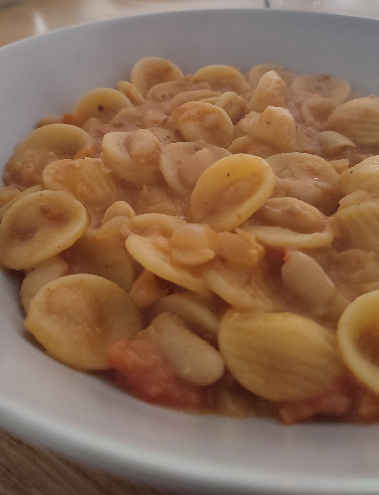

Haricots blancs et orecchiette
Ingredients
×
- 1 gousse d'ail
- 1 oignon
- 2 tomates
- haricots blancs
- eau
- 1 cube de bouillon
- sel
- orecchiette

Préparation
Étape 1
Dorer 1 gousse d'ail et 1 oignon émincé (beaucoup).
Étape 2
Ajouter 2 tomates en petits morceaux et remuer un peu (3min).
Étape 3
Ajouter les haricots blancs avec leur jus et remuer.
Étape 4
Ajouter de l’eau à hauteur, 1 cube de bouillon et du sel.
Étape 5
Laisser bouillir 15min.
Étape 6
Cuire les orecchiette à part et les ajouter au mélange.
Étape 7
Mélanger sur le feu.
Conseils
- Optionnel : ajouter des flocons de piment après les haricots.